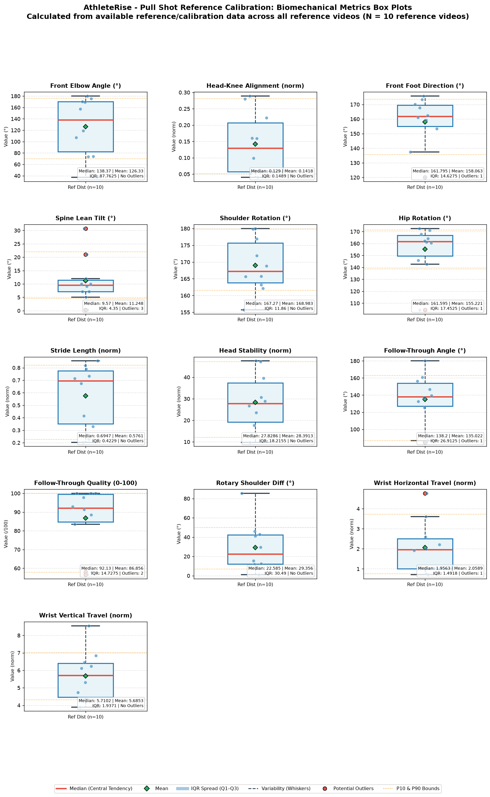
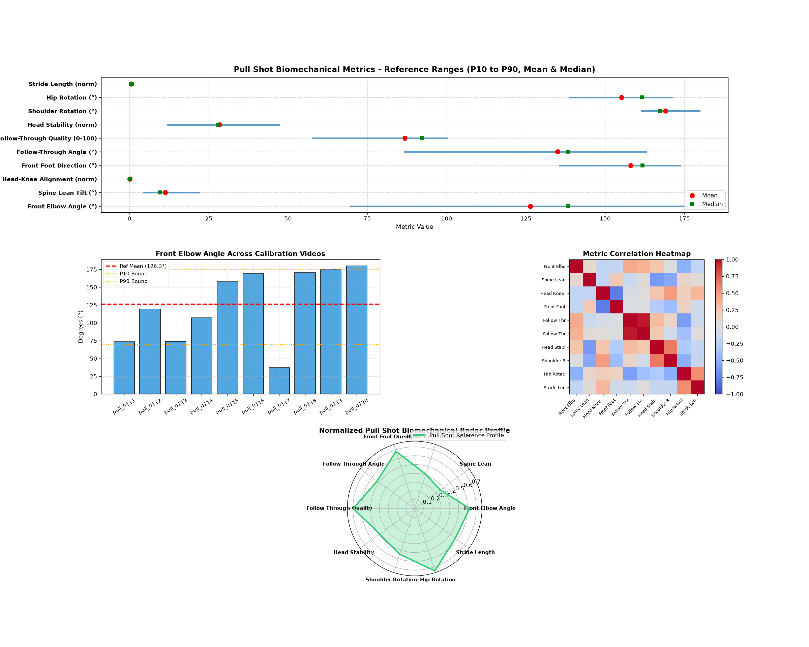

Shot Type: Pull Shot | Handedness: MIXED
10
10
0
Empirical Reference
P10 - P90
Each biomechanical metric is treated independently across all reference videos.
| Metric | Valid Samples | Mean | Median | Std Dev | Variance | Min | Max | Q1 (P25) | Q3 (P75) | IQR | P10 | P90 | P10-P90 Range |
|---|---|---|---|---|---|---|---|---|---|---|---|---|---|
| Front Elbow Angle (°) | 10 | 126.33 | 138.37 | 48.94 | 2395.37 | 37.06 | 180.00 | 82.32 | 170.08 | 87.76 | 69.84 | 175.87 | 69.84 - 175.87 |
| Spine Lean Tilt (°) | 10 | 11.25 | 9.57 | 8.22 | 67.58 | 0.33 | 30.73 | 7.11 | 11.46 | 4.35 | 4.57 | 22.03 | 4.57 - 22.03 |
| Head-Knee Alignment (norm) | 10 | 0.14 | 0.13 | 0.09 | 0.01 | 0.04 | 0.29 | 0.06 | 0.21 | 0.15 | 0.05 | 0.28 | 0.05 - 0.28 |
| Front Foot Direction (°) | 10 | 158.06 | 161.79 | 16.46 | 271.10 | 120.02 | 175.74 | 154.92 | 169.55 | 14.63 | 135.63 | 173.53 | 135.63 - 173.53 |
| Shoulder Rotation (°) | 10 | 168.98 | 167.27 | 7.66 | 58.64 | 155.73 | 180.00 | 163.79 | 175.65 | 11.86 | 161.50 | 179.78 | 161.50 - 179.78 |
| Hip Rotation (°) | 10 | 155.22 | 161.59 | 19.30 | 372.30 | 104.46 | 172.57 | 149.47 | 166.93 | 17.45 | 138.83 | 171.17 | 138.83 - 171.17 |
| Stride Length (norm) | 10 | 0.58 | 0.69 | 0.24 | 0.06 | 0.20 | 0.85 | 0.35 | 0.77 | 0.42 | 0.23 | 0.82 | 0.23 - 0.82 |
| Head Stability (norm) | 10 | 28.39 | 27.83 | 12.64 | 159.82 | 9.82 | 47.57 | 19.12 | 37.34 | 18.22 | 12.01 | 47.22 | 12.01 - 47.22 |
| Follow-Through Angle (°) | 10 | 135.02 | 138.20 | 28.71 | 824.39 | 84.88 | 180.00 | 127.09 | 154.00 | 26.91 | 86.71 | 162.85 | 86.71 - 162.85 |
| Follow-Through Quality (0-100) | 10 | 86.86 | 92.13 | 15.69 | 246.17 | 56.59 | 100.00 | 84.73 | 99.45 | 14.73 | 57.80 | 100.00 | 57.80 - 100.00 |
| Rotary Shoulder Diff (°) | 10 | 29.36 | 22.59 | 24.10 | 580.79 | 1.09 | 85.41 | 11.99 | 42.48 | 30.49 | 6.78 | 50.03 | 6.78 - 50.03 |
| Wrist Horizontal Travel (norm) | 10 | 2.06 | 1.96 | 1.26 | 1.58 | 0.71 | 4.77 | 1.01 | 2.50 | 1.49 | 0.75 | 3.73 | 0.75 - 3.73 |
| Wrist Vertical Travel (norm) | 10 | 5.69 | 5.71 | 1.36 | 1.84 | 3.90 | 8.55 | 4.46 | 6.40 | 1.94 | 4.31 | 7.01 | 4.31 - 7.01 |
Visualizing central tendency (median & mean), spread (IQR box Q1–Q3), variability (whiskers), and potential outliers across reference videos.


| Video File | Status | Stance | Duration | FPS | Frames | Resolution | Pose Detection % | Contact Frame | Notes |
|---|---|---|---|---|---|---|---|---|---|
| pull_0111.avi | VALID | Left | 1.6s | 25 | 40 | 1280x720 | 100.0% | 20 | |
| pull_0112.avi | VALID | Left | 1.68s | 25 | 42 | 1280x720 | 100.0% | 28 | |
| pull_0113.avi | VALID | Right | 3.0s | 25 | 75 | 1280x720 | 100.0% | 47 | |
| pull_0114.avi | VALID | Right | 1.48s | 25 | 37 | 1280x720 | 100.0% | 27 | |
| pull_0115.avi | VALID | Right | 1.36s | 25 | 34 | 1280x720 | 100.0% | 12 | |
| pull_0116.avi | VALID | Left | 2.92s | 25 | 73 | 1280x720 | 98.6% | 25 | |
| pull_0117.avi | VALID | Left | 1.68s | 25 | 42 | 1280x720 | 97.6% | 16 | |
| pull_0118.avi | VALID | Right | 2.84s | 25 | 71 | 1280x720 | 100.0% | 52 | |
| pull_0119.avi | VALID | Right | 2.36s | 25 | 59 | 1280x720 | 98.3% | 37 | |
| pull_0120.avi | VALID | Right | 2.0s | 25 | 50 | 1280x720 | 98.0% | 37 |